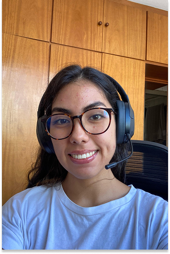

Oi sou a Jasmin! Engenheira de dados
Estagiária de Data Science, Estudante de Sistemas de informação uma futura Engenheira de dados :)
Saiba Mais


Estagiária de Data Science, Estudante de Sistemas de informação uma futura Engenheira de dados :)
Saiba Mais
Banco Safra - Estágio em Data Science
(03/2025 - Atualmente)
Banco Safra - Estágio de Desenvolvimento de Sistemas
(02/2024 - 02/2025)
NovaJerb - Assistente de E-commerce
(10/2023 - 01/2024)
Tesouro Laser - Arte finalista Jr
(05/2022 - 07/2023)
Recepcionista - Target Fit
(01/2022 - 05/2022)
Bacharel - Faculdade Impacta Tecnologia
Sistemas de Informação (07/2023 - previsto para 07/2027)
Curso Técnico - ETEC SEBRAE
Informática para a Internet (06/2021 - 12/2022)
Sou uma pessoa empática e curiosa, apaixonada por novas experiências! Desde conhecer um restaurante até aprender uma nova linguagem de programação. Meu sonho é viajar pelo mundo, conhecer culturas diferentes e fazer um voluntariado, acredito que toda experiência tem o poder de nos transformar :)
Descubra as habilidades e ferramentas que domino e que permitem criar soluções criativas e funcionais para meus clientes

Experiência em desenvolvimento fullstack com foco em tecnologias modernas

Habilidade em criar layouts modernos e responsivos, com foco na experiência do usuário

Conhecimentos em design de interface e experiência do usuário visualmente atraentes e intuitivas

Experiência em ferramentas de gerenciamento de versôes para controle de projetos.
Alguns projetos desenvolvido na faculdade e cursos a parte:
Fokus é um aplicativo web desenvolvido para ajudar você a organizar seu tempo e aumentar a produtividade, O aplicativo é ideal para quem segue a técnica Pomodoro ou precisa de uma ferramenta simples e eficaz para se concentrar em suas tarefas.
Leia mais →Tecladin é um teclado virtual interativo, onde cada tecla emite o som de diferentes instrumentos, o objetivo é proporcionar uma interface simples e intuitiva, permitindo que qualquer pessoa possa explorar diferentes sons e criar sequências musicais ao clicar nas teclas.
leia mais →Aplicativo feito em Flutter durante a faculdade, onde o usuário joga pedra, papel e tesoura com Pokémon. O jogo usa imagens e interações simples para simular partidas contra o computador, de forma divertida e interativa.
leia mais →